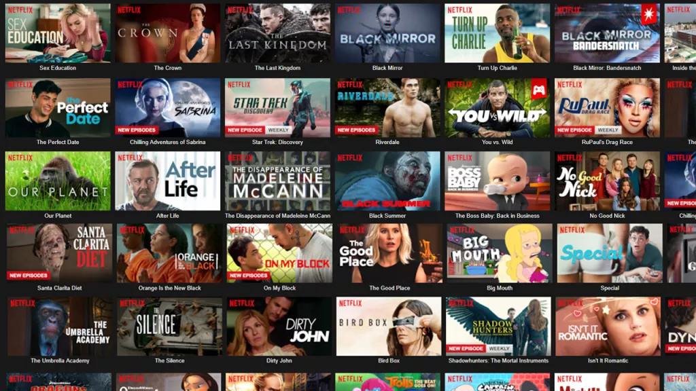
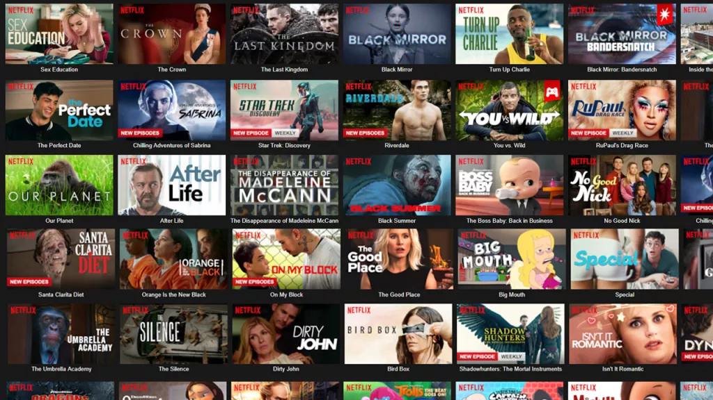

I have always found it fascinating working with big datasets ,spreadsheet software, programming and Discovering how important a dataset can be for solving real-life problems , which has inspired me to follow my passion to work as a data analyst, If any opportunities arise I would love to get them.
To see all of my Certificates click on "About Me" from above,
Or keep scrolling the page to see my work.
 

Trying to find a correlation between budget, votes & company or maybe other factors .
Cleaning & Filtering cars dataset for all car models is Asia, Europe & USA

Building Interactive Excel Dashboard that shows the performance & sales for global-fashion-group selected by country: Australia and for each state from the year 2015 to 2018.

US Accident (More Than 2.8 Million Records)
Asked Questions:
Are there more accidents in colder or warmer places?
Which states have the highest umber of accidents, how about per capita?...
Does NewYork shows within the Data, and if yes, why is the count of accidents lower compared to its population?
Among the top 100 cities in the number of accidents, which state do they belong to most frequently?
What time of the day are accident most frequent?
Which Days of the week are most accidents?
which month have the most accidents?
What is the trend of accidents year over year (increasing/decreasing)?
What is accident per unit of traffic the highest?
Read more
Web scraping Empire's 100 Greatest Movies Of All Time.
Building Interactive Excel Dashboard that shows the sales for Bikes based on Gender, Income, Marital States & Education.